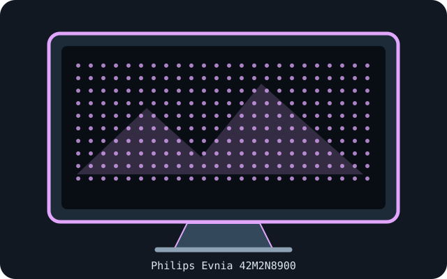

[ INDIVIDUAL COMPONENT // DISPLAYS ]
Philips Evnia 42M2N8900
41.54-inch 4K OLED monitor with a 138 Hz maximum refresh rate.

IDENTIFICATION: Confirm the complete model/SKU and region on the rear label. Specifications below reflect manufacturer-published information for this model family; input timings and power supplies may vary with source, firmware, region and operating mode.
Specifications
| Catalog subcategory | OLED displays |
|---|---|
| Exact product / family | Philips Evnia 42M2N8900 |
| Panel technology / size | 41.54-inch OLED, flat, 16:9 |
| Native resolution | 3840 × 2160 |
| Native refresh rate | 48–138 Hz variable refresh range; maximum 138 Hz at native resolution. |
| HDR / luminance / contrast | Philips lists HDR support and 135 cd/m² typical SDR brightness. The cited official product information does not state a peak-HDR luminance or contrast figure, so none is inferred here. |
| Inputs and I/O | 2 × HDMI 2.1; 1 × DisplayPort 1.4; USB-C video input; USB-A downstream hub, USB upstream and audio out (verify regional configuration in the manual). |
| Stand / VESA | Stand adjustment and VESA 300 × 300 mm mounting pattern; the large panel requires a mount rated for its weight and dimensions. |
| Power | AC mains; do not assume laptop charging from USB-C without checking the exact regional specification/manual. Confirm required input power on the unit label. |
Signal and compatibility notes
At 4K/138 Hz, verify the GPU, cable and selected HDMI/DisplayPort timing; console sources may top out below the panel's maximum refresh. USB-C video requires DisplayPort Alt Mode. Because of its 42-inch class, check desk depth, stand footprint and 300 mm VESA mount load capacity before installation.
Native resolution and refresh depend on the connected computer's GPU, supported timing, port, cable, firmware, operating system and selected color format. Confirm capabilities in the model-specific manual rather than inferring them from connector shape alone.
OLED care and preservation
OLED panels can retain static imagery. Enable the manufacturer's panel-protection, pixel-shift and refresh features; follow on-screen prompts and documented care intervals. Avoid disconnecting power during a panel maintenance cycle, and record operating hours, firmware, calibration state and image condition for archival systems.
Manufacturer manuals & sources
- Philips — Evnia 42M2N8900 official product specificationsManufacturer-hosted model information; verify the exact regional SKU, revision, and current manual before installation.
- Philips — official 42M2N8900 support, manuals and downloadsManufacturer-hosted model information; verify the exact regional SKU, revision, and current manual before installation.